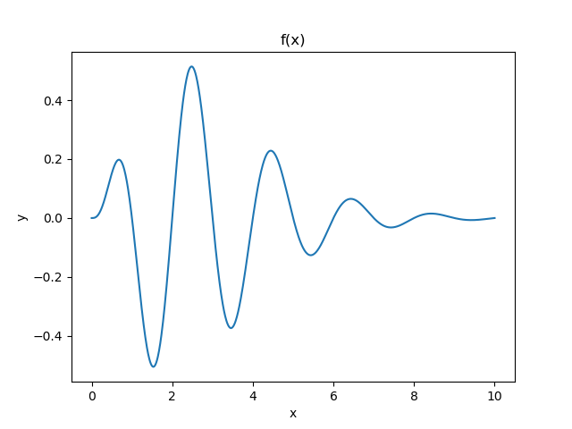

import numpy as np
import matplotlib.pyplot as plt
x = np.linspace(0,10,1000)
a = 1.0
y = x**2 * np.exp(-a*x) * np.sin(np.pi*x) # numpy functions!
plt.plot(x, y)
plt.title("f(x)")
plt.xlabel("x")
plt.ylabel("y")
#plt.legend()
plt.show()
# (0,1) (1,1) # +----------------------+ # | Figure (0.9,0.9)| Figure provides the working area (canvas). # | +------------------+ | Axes provides coordinates. # | | Axes | | # | | | | # | | | | # | |(0.1,0.1) | | # | +------------------+ | # |(0,0) |(1,0) # +----------------------+
import numpy as np
import matplotlib.pyplot as plt
x = np.linspace(0,10,1000)
a = 1.0
y = x**2 * np.exp(-a*x) * np.sin(np.pi*x) # numpy functions!
# Solution I.
#fig, ax = plt.subplots(1, 1)
# Solution II.
#ax = plt.subplot(111) # 1 row and 1 column
#assert plt.gca() == ax
# Solution III.
#fig = plt.figure() # returns the Figure instance
#ax = fig.add_subplot(111) # returns the Axes instance
#assert plt.gca() == ax
# Solution IV.
fig = plt.figure()
ax = fig.add_axes((0.1, 0.1, 0.8, 0.8), facecolor="white")
ax.plot(x, y) # ax.plot(x, y, fmt)
ax.set_title("f(x)")
ax.set_xlabel("x")
ax.set_ylabel("y")
plt.show() # display a figure
# Comparison
+-------------------+----------------------+
| pyplot | axes |
+-------------------+----------------------+
| plt.plot(x, y) | ax.plot(x, y) |
| plt.title("f(x)") | ax.set_title("f(x)") |
| plt.xlabel("x") | ax.set_xlabel("x") |
| plt.ylabel("y") | ax.set_ylabel("y") |
| plt.legend() | ax.legend() |
+-------------------+----------------------+
ax1 = plt.subplot(211) # or plt.subplot(2, 1, 1), nrows, ncols, index ax2 = plt.subplot(212) # or plt.subplot(2, 1, 2) # +---+ # |ax1| grid 2x1 # +---+ # |ax2| # +---+
ax1 = plt.subplot(121) ax2 = plt.subplot(122) # +---+---+ # |ax1|ax2| grid 1x2 # +---+---+
ax1 = plt.subplot(221) ax2 = plt.subplot(222) ax3 = plt.subplot(223) ax4 = plt.subplot(224) # +---+---+ # |ax1|ax2| grid 2x2 # +---+---+ # |ax3|ax4| # +---+---+
https://stackoverflow.com/questions/8213522/when-to-use-cla-clf-or-close-for-clearing-a-plot
plt.cla() clears an axis, i.e. the currently active axis in the current figure. It leaves the other axes untouched. plt.clf() clears the entire current figure with all its axes, but leaves the window opened, such that it may be reused for other plots. plt.close() closes a window, which will be the current window, if not specified otherwise. Save a plot and delete its memory. plt.savefig(filename) plt.close(plt.gcf())